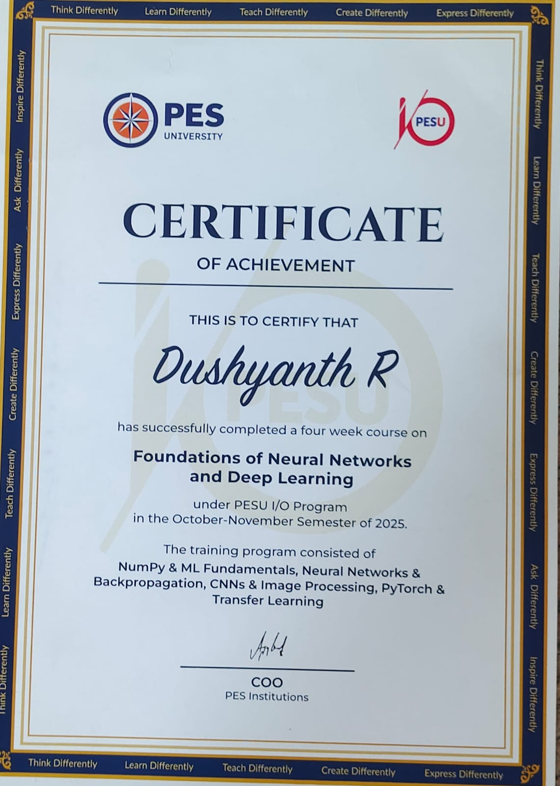

I am Dushyanth. R, and I am someone who is passionate about technology. This resume has been built entirely using HTML as the capstone project at the end of the HTML section of my web development course.
2012 – 2025
Grade: 97% (Class X)
2023 – 2025
Grade: 90.6% (Class XII)
Bachelor of Technology (Computer Science)
First Year CGPA: 8.88
Achieved a 50% Tuition Fee Scholarship by securing a place among the top 20% of the college.
I am currently a beginner and do not have any professional work experience. At present, I spend most of my time learning new technologies, improving my programming skills, and building projects to strengthen my technical knowledge.
